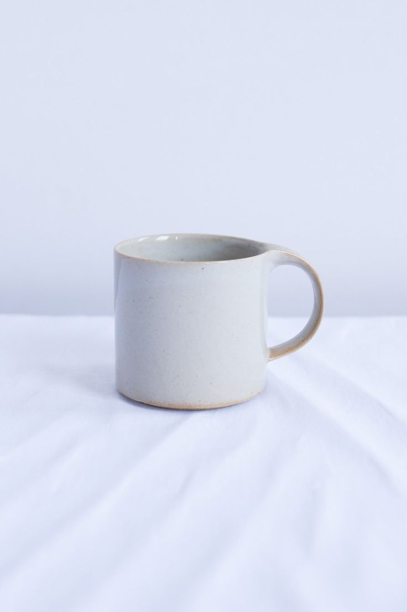
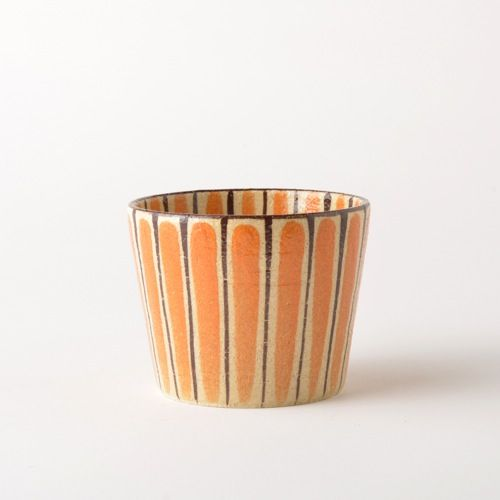
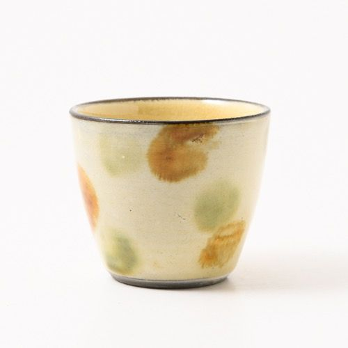

otonarisan
瀬戸焼/Setoyakiware
瀬戸焼は、瀬戸層群で採取された木節粘土や蛙目粘土、珪砂などを使用して作られています
陶器は数種類の粘土を、磁器は粘土と石を混ぜて作りますが、粘土や石の配合によって、硬度や色合いが変わるのが特徴です




歴史/History
鎌倉時代、中国でやきものの技術を学んだ加藤四郎左衛門景正が瀬戸で開窯したことが始まりとされています
平安時代末期からは「古瀬戸」と呼ばれる中国陶磁をモデルとした施釉陶器が生産されるようになり、室町時代まで国内唯一の施釉陶器産地として発展していきました
そして、江戸時代後期には磁器生産も始まりました
陶器も磁器も生産されることが瀬戸焼の特色の一つです